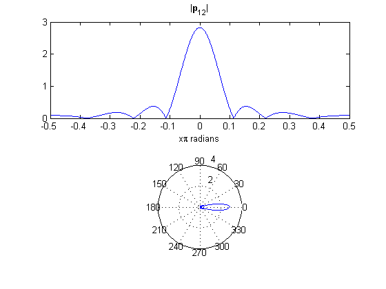
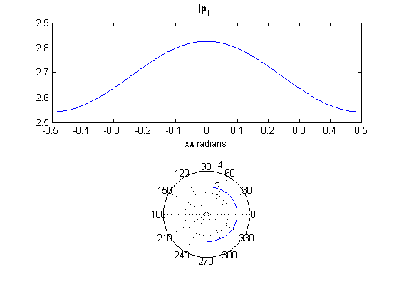
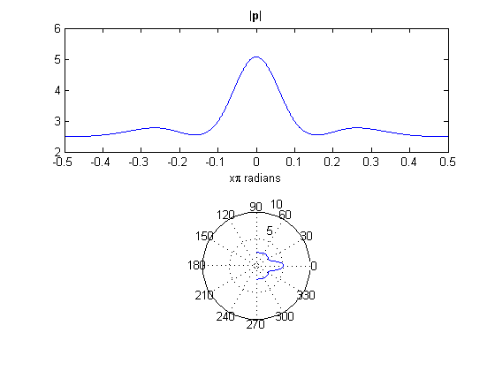

% Author: Sam Harkness % Date: 17 Oct 2014 % Class: EELE 517 close all clear all n = 1000; %number of points c = 343; %speed of sound (in air) % rho_c = 415; %characteristic impedance (of air) Pref = 20e-6; %reference pressure f = 5e3; %frequency w = 2*pi*f; %radian frequency k = w/c; %wave number a12 = 12e-2; %radius of 12cm driver a1 = 1e-2; %radius of 1cm driver h = 20e-2; %vertical distance between center of two drivers r12 = 2; %distance to sweeping line from 12cm driver r1 = sqrt(h^2 + 2^2); %distance to sweeping line from 1cm driver SPL12 = 100; SPL1 = 100; P12 = Pref * 10^(SPL12/20) * sqrt(2); %Pressure amplitude for the 12cm driver at theta12 = 0, r12 P1 = Pref * 10^(SPL1/20) * sqrt(2); %Pressure amplitude for the 1cm driver at theta1 = 5.7deg, r1 theta = linspace(-pi/2, pi/2, n); theta12 = theta; %theta1 = [linspace(-pi/2, -5.7*pi/180, 50), linspace(5.7*pi/180, pi/2,50)]; %array of linearly space elements between the minimum and maximum values of theta1 l = sqrt(2^2 + r12^2 - 2*2*r12*cos(theta)); %use law of cosines to find distance between point X and the sweeping line at 2m from the 20 cm driver m = sqrt(l.^2 + h^2); %distance between the sweeping line 20cm above point X clear l; theta1 = acos((m.^2-2^2-r1^2)./(2*2*r1)); %use law of cosines to find angle between the 1cm driver and the sweeping line clear m; % U12 = P12 * 2/rho_c * r12./a12 * 1/(k*a12); % U1 = P1 * 2/rho_c * r1./a1 * 1/(k*a1); % p12_solo = 1i * rho_c/2 * U12 .* a12./r12 * k*a12 .* exp(1i*(-k*r12)) .* (2*besselj(1,k*a12*sin(theta12))./(k*a12*sin(theta12))); % p1_solo = 1i * rho_c/2 * U1 .* a1./r1 * k*a1 .* exp(1i*(-k*r1)) .* (2*besselj(1,k*a1*sin(theta1))./(k*a1*sin(theta1))); p12_solo = 1i * P12 .* exp(1i*(-k*r12)) .* (2*besselj(1,k*a12*sin(theta12))./(k*a12*sin(theta12))); p1_solo = 1i * P1 .* exp(1i*(-k*r1)) .* (2*besselj(1,k*a1*sin(theta1))./(k*a1*sin(theta1))); figure(1) subplot(2,1,1),plot(theta./pi,abs(p12_solo)),title('|\bf{p}\rm_{12}|'),xlabel('x\pi radians') subplot(2,1,2),polar(theta,abs(p12_solo)) figure(2) subplot(2,1,1),plot(theta./pi,abs(p1_solo)),title('|\bf{p}\rm_1|'),xlabel('x\pi radians') subplot(2,1,2),polar(theta,abs(p1_solo)) p_tot = p12_solo + p1_solo; figure(3) subplot(2,1,1),plot(theta./pi,abs(p_tot)),title('|\bf{p}|'),xlabel('x\pi radians') subplot(2,1,2),polar(theta,abs(p_tot))  